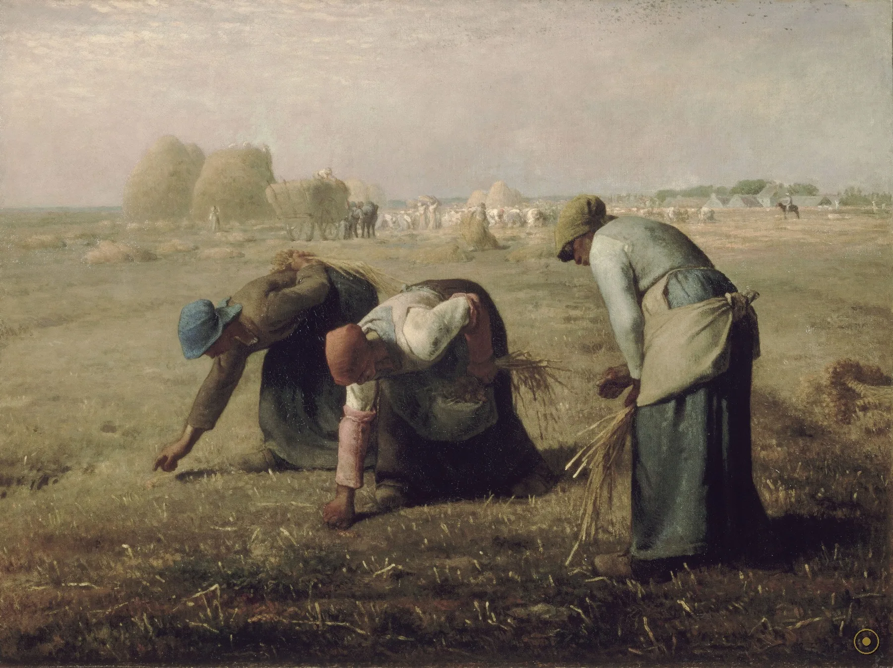
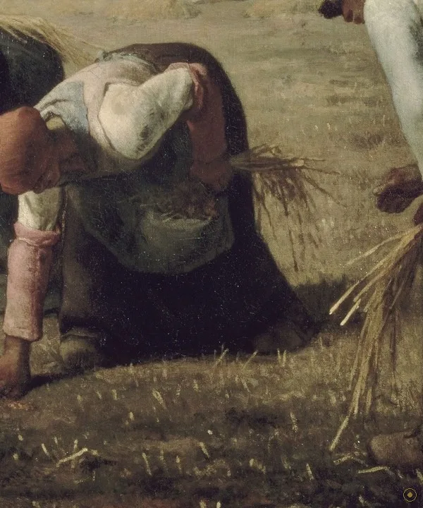
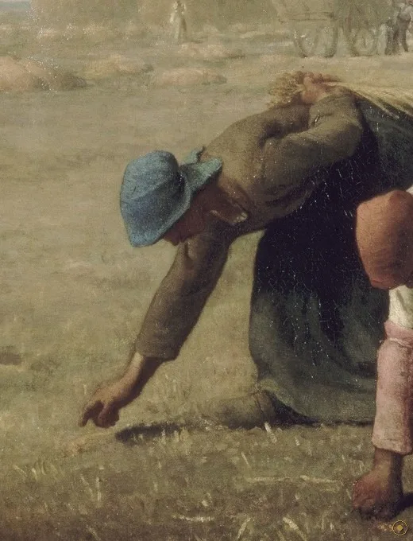
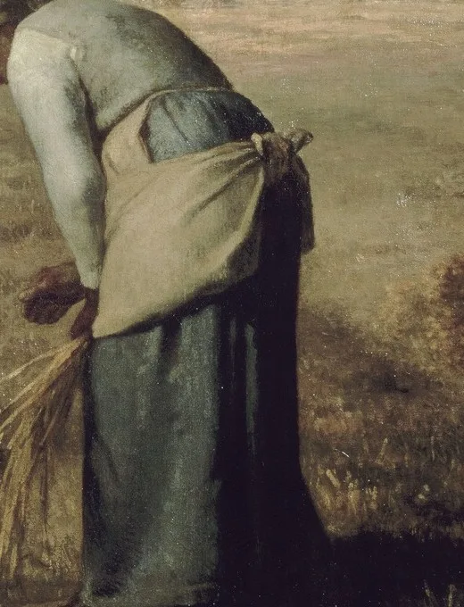
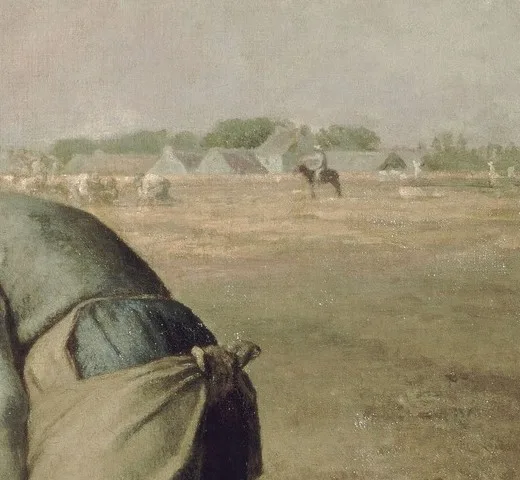
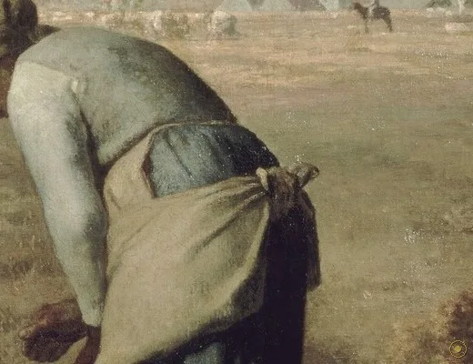
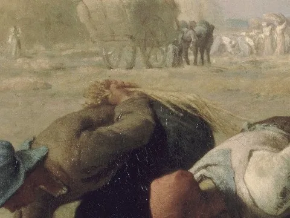
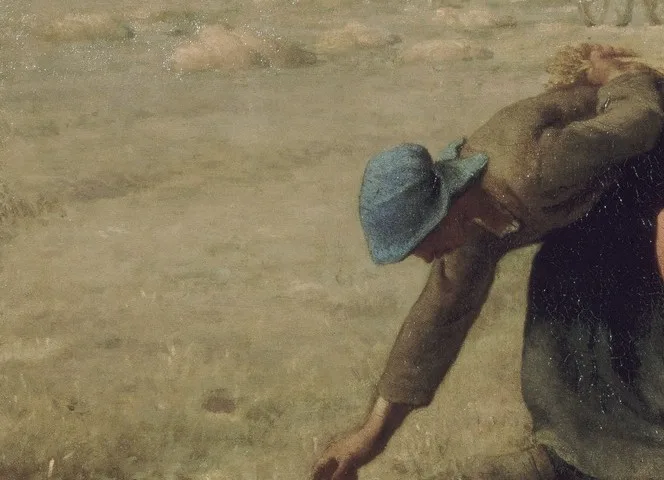
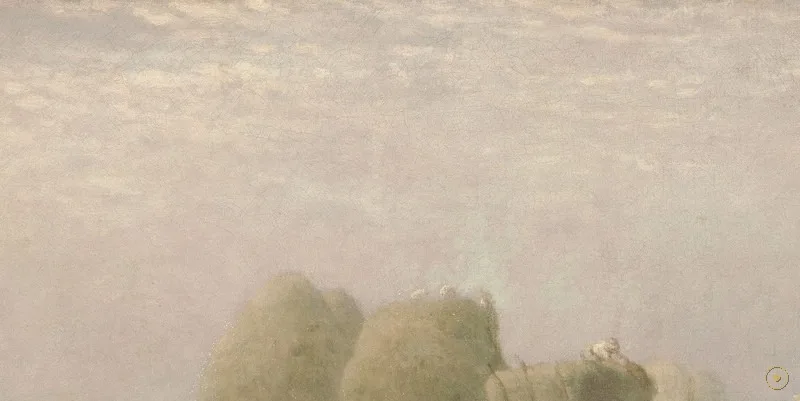

三位农妇弓着背，在收割后的田里捡拾遗落的麦穗；她们身后，是堆成小山的草垛、满载的马车与远处山坡上的庄园。米勒画的是当时社会最底层的一群人——获准在别人收割完毕之后，捡拾残粒的穷人。
拾穗（gleaning）是法国乡间一项古老权利：地主运走主收成后，穷人被允许进田捡拾遗落的麦穗。米勒把这一幕放大到几乎与宗教画同等的尺幅，让卑微的劳作获得了纪念碑般的体量。
1857 年沙龙展出时，它激怒了中上阶层。有批评者写道，这三个「丑陋」的女人「像贫穷的三位命运女神」——因为如此大的画布，本该留给神话或宗教，而非田间穷人。
米勒出身诺曼底农民家庭，一生与贫困为伴。他曾说，自己画的不是风景，而是「人在土地上的辛劳」。这幅画，正是这句话的图像版。
—— 据米勒书信与艺术史通说（转译）
米勒画下的，是三种被土地压低、却不肯低头的姿态。
画面里每个人、每束麦穗都有来处：风神、花神、时序女神、盲眼的小爱神，各有来处。点击光点，看三个女人为何弓身、草垛为何那么大、远处的庄园又意味着什么。

点击画面中的 ✦ 光点 查看画中细节 · 图片来源：Wikimedia Commons（公有领域）
从沙龙里的争议，到卢浮宫的镇馆，再到全球符号——这幅画的命运，比画中任何一位农妇都更跌宕。
1857 · 巴黎沙龙
在官方沙龙展出时，中上阶层批评它「丑陋」「颠覆」，认为大画布应留给神话题材；米勒把穷人放大到纪念碑尺寸，本身即是冒犯。
➤1857–1875 · 困顿
米勒急于用钱，以低于要价的 3000 法郎卖给一位英国藏家；余生声名不显，直到 1875 年去世，公众才逐渐读懂他。
➤1889 之后 · 封神
1889 年拍出 30 万法郎（约为当年天价），后由香槟商 Pommery 夫人遗赠卢浮宫，今入藏奥赛博物馆，与《晚钟》并列为米勒最著名的面孔。

其一 · 真实的权利。拾穗是法国乡间一项古老习俗：地主收割并运走主收成后，穷人被允许进田捡拾遗落麦穗。米勒画的，正是这一 legally 存在却卑微的权利——它介于施舍与劳作之间。
其二 · 尺寸的挑衅。83.8 × 111.8 厘米的画布，在当时通常留给宗教或神话题材；米勒却用它画三个「最低等」的农妇。尺寸本身即立场：把底层抬进「大画」的尊荣里。
其三 · 它会「变暗」。油画表面随岁月氧化、清漆变黄，今天的金黄比原来更深沉；我们以为的「暖」，部分是时间替米勒加的一层滤镜。
※ 此画为米勒自选题材，非受贵族委托；「三命运女神」等评语为当时批评者原话（含讽刺之意），草垛／庄园的阶级对照读作主流艺术史共识。
把这场劳作拆开，每位女子都有自己的重负；而真正的主角，是那条横贯画面的地平线。
双膝触地、俯身捡穗，是全画姿态最低也最稳的一笔。

身体前倾、双臂垂地，第二种拾穗的姿态。

背对观者弯腰翻找，米勒给她的只有沉默的背影。

右后方圆硕的干草垛，与空竹篮形成刺眼对照。

满载麦捆驶向庄园，代表另一种速度与所有权。

地平线上的城堡，是这片土地真正的所有者。

收割后细密的金黄，是拾穗发生的舞台。

明净的上空与斜洒的光，不悲不喜地铺开。
与同代学院派追逐神话题材不同，米勒把农民与土地搬上大画布，让「卑微的劳作」获得纪念碑般的体量。
他定居枫丹白露森林旁的巴比松村，与柯罗、卢梭等为伍，主张走出画室、面对真实的自然与农事。
米勒不煽情、不控诉，只用平静的构图与暖金的光，让观者自己读出重量；这份克制，反而比呐喊更持久。
1857 年被视为「丑陋」，到十九世纪末被奉为现实主义的高峰；同代人以他为源头，派生出洗衣妇、刨地工等「劳动史诗」。
沙龙展出，遭中上阶层讥讽；米勒贱卖此画。
米勒去世，生前声名不显，公众尚未读懂他。
拍出 30 万法郎天价；后由 Pommery 夫人遗赠卢浮宫。
经自然主义与左拉等推崇，被尊为现实主义高峰。
与《晚钟》《呐喊》并列，成为全球最易辨认的农事图像之一，并启发了瓦尔达《拾穗者和我》。